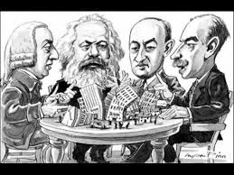

El estancamiento productivo y la sangría de capitales: anatomía de un modelo agotado
Existe una tendencia estructural general al decrecimiento de la tasa de ganancia en el modelo chileno, pero esta no se manifiesta de manera homogénea. Se expresa de forma asimétrica y desigual a través de las distintas fracciones del capital, generando una fractura interna en la burguesía que es clave para entender la coyuntura política actual.

1. Anatomía de un modelo agotado
Existe una tendencia estructural general al decrecimiento de la tasa de ganancia en el modelo chileno, pero esta no se manifiesta de manera homogénea. Se expresa de forma asimétrica y desigual a través de las distintas fracciones del capital, generando una fractura interna en la burguesía que es clave para entender la coyuntura política actual.
Para comprender la crisis actual, no basta con mirar el crecimiento del PIB como una cifra abstracta; hay que diseccionar su composición de clase y su base material. Chile no sufre una "desaceleración cíclica", sino un estancamiento productivo estructural fruto de un modelo diseñado para la extracción de renta y la financiarización, no para el desarrollo de las fuerzas productivas nacionales.
El punto más alto de desarrollo productivo interno en Chile se alcanzó durante el periodo de Industrialización por Sustitución de Importaciones (ISI), particularmente entre las décadas de 1950 y 1970. En ese periodo, gracias a una política estatal de protección del mercado interno, crédito dirigido y planificación, el sector manufacturero llegó a representar cerca del 28% al 30% del PIB. Era una economía que, aunque con contradicciones y límites de mercado, generaba empleo industrial, encadenamientos productivos locales y un mercado interno dinámico.
Hoy, esa realidad ha sido deliberadamente destruida. Tras el shock neoliberal de 1973 y su consolidación en la postdictadura, la economía fue reprimarizada. La participación de la manufactura en el PIB se desplomó hasta estabilizarse en un raquítico 10% a 12% en la actualidad. Lo que queda de "industria" en Chile son, en gran medida, procesos de empaquetado o ensamblaje de bajo valor agregado, mientras que el grueso de la actividad económica se concentra en la extracción de commodities (minería, forestal, pesca) y en servicios financieros e inmobiliarios especulativos.
Por qué hoy no se da el desarrollo productivo
En el capitalismo chileno actual, la gran burguesía que controla los destinos del país, no invierte en aumentar la productividad real porque su tasa de ganancia ya no depende de la innovación industrial, sino de la extracción de renta y la especulación. El modelo se sostiene sobre tres pilares homeostáticos:
- Salarios deprimidos y precarización: Mantener un ejército industrial de reserva para garantizar mano de obra barata.
- Extractivismo sin encadenamientos: Exportar cobre, litio o celulosa en estado bruto, dejando que el valor agregado (y los empleos de calidad) se generen en los países del centro imperialista.
- Financiarización: El excedente generado por el trabajo no se reinvierte en fábricas o tecnología, sino que se deriva al mercado de capitales, al endeudamiento de las familias (CAE, tarjetas, hipotecas) y a la especulación inmobiliaria.
El resultado es una caída sostenida del dinamismo: el crecimiento del PIB per cápita, que promedió un 3,2% en la década de 2000 (impulsado por el boom de los commodities), ha caído a un promedio de apenas 1,6% entre 2020 y 2025. La última vez que Chile creció sostenidamente por encima del 3% fue en 2013; desde entonces, solo ha habido rebotes técnicos excepcionales. La productividad, el motor real de cualquier desarrollo, lleva décadas estancada.
La renuncia del capital nacional a la expansión productiva: el caso de la minería
Esta renuncia a la innovación productiva no es un "accidente" ni una simple "falta de visión" empresarial. Es una opción de clase estructural. El capitalismo chileno, al ser fundamentalmente rentista, extractivista y financiero, ha renunciado hace décadas a ser el motor de la expansión productiva de una hipotética industria nacional, y de la minería, "el sueldo de Chile", en particular. Esa tarea se la ha cedido al capital transnacional, pero bajo una modalidad muy específica que maximiza la extracción de renta (plusvalía extraordinaria) mientras externaliza los costos.
La ilusión del "porcentaje estratégico" y el control real
Es cierto que en muchos megaproyectos (especialmente en el cobre) el Estado (vía Codelco) o grupos económicos locales mantienen participaciones mayoritarias o significativas en el papel. Sin embargo, el capital internacional no necesita el 100% de la propiedad para dominar el negocio. Lo que busca es el control operativo y tecnológico:
- Dependencia tecnológica: La minería moderna (especialmente la de baja ley o la extracción directa de litio) requiere tecnología de punta, patentes y know-how que el capital local no posee. Al asociarse, el socio extranjero pone la tecnología y la gestión. Esto le permite fijar los costos, decidir los plazos de expansión y, crucialmente, cobrar regalías por el uso de esa tecnología a la propia sociedad mixta.
- Comercialización y fijación de precios: El mineral no se vende en Chile. Se vende en la Bolsa de Metales de Londres (LME) o a través de contratos a largo plazo negociados por las matrices transnacionales. El socio local o el Estado reciben un dividendo, pero no tienen injerencia en la estrategia global de precios, logística o mercados finales.
La extracción de renta más allá del dividendo (Plusvalía Extraordinaria)
El capital internacional no viene a Chile solo a buscar un "porcentaje de las utilidades" al final del año. Diseñan la estructura del negocio para extraer valor antes de que se declare la utilidad neta, mediante mecanismos que el capitalismo local acepta gustosamente:
- Precios de transferencia: Las filiales chilenas "compran" insumos, maquinaria o servicios de consultoría a otras empresas del mismo grupo en el extranjero a precios inflados, reduciendo artificialmente las utilidades declaradas en Chile (y por ende, los impuestos), mientras la ganancia real se acumula en paraísos fiscales o en la matriz.
- Endeudamiento interno: La filial chilena se endeuda con la matriz o con bancos internacionales asociados. Los pagos de intereses de esa deuda salen de Chile, drenando divisas, mientras la deducción de intereses reduce la base imponible local.
- Externalización de riesgos: El capital transnacional asume el riesgo tecnológico y de mercado, pero externaliza el riesgo ambiental, social y laboral al territorio chileno. Si hay un desastre (relaves, sequía por consumo de agua, conflictos con comunidades), el costo político y la remediación los paga el Estado chileno (es decir, el pueblo), no la matriz extranjera.
El rol de la burguesía local: de "nacional" a "compradora" o "facilitadora"
¿Qué hacen entonces los grandes grupos económicos chilenos (Matte, Angelini, Ponce Lerou, etc.) en la minería si no lideran la expansión? Actúan como una burguesía intermediaria o "compradora". Su función no es innovar ni expandir la frontera productiva con tecnología propia. Su función es aportar el "capital político", el conocimiento del terreno, la gestión de las relaciones con el Estado, la logística local o la mano de obra subcontratada.
A cambio de facilitar que el capital transnacional opere sin sobresaltos políticos o legales, estos grupos obtienen una porción de la renta (a través de sociedades mixtas, empresas de servicios o acciones minoritarias). Son funcionales al sistema porque le dan una "cara chilena" a la extracción, amortiguando el rechazo popular.
El caso paradigmático: El Litio
El litio es el ejemplo perfecto de esta dinámica.
En el caso de SQM, históricamente controlada por el grupo Ponce Lerou, la entrada de capitales extranjeros (primero Nutrien de Canadá, y ahora con la fuerte presencia de Tianqi Lithium de China) no fue para "desarrollar" el litio chileno, sino para asegurar el control de las reservas estratégicas frente a la transición energética global. El grupo local obtuvo una gigantesca plusvalía financiera al vender acciones, pero el control estratégico de hacia dónde va ese recurso y con qué tecnología se extrae, está en manos extranjeras.
El paradigma de "asociaciones público-privadas" que propone el Estado, si no viene acompañado de una política de transferencia tecnológica obligatoria, procesamiento local (no exportar solo carbonato o cloruro, sino hidróxido o baterías) y control de la comercialización, seguirá siendo un esquema de extracción de renta. El Estado pondrá el recurso (la salmuera), pero el socio privado (extranjero) seguirá poniendo las reglas del juego técnico-financiero.
En síntesis: el capitalismo chileno no "deja" la expansión en manos extranjeras por incapacidad técnica solamente, sino porque es funcional a su modelo de acumulación.
A la fracción dominante del capital en Chile no le interesa descapitalizarse invirtiendo en I+D minero a 20 años plazo. Le interesa que el capital transnacional ponga el capital de riesgo, se lleve la plusvalía extraordinaria, y a cambio, el Estado chileno y los grupos locales recojan las migajas de la renta (impuestos, regalías, dividendos, contratos de servicios) para mantener la gobernabilidad y el consumo interno, sin tocar la estructura de propiedad real del proceso de valorización.
La sangría de capitales: evasión, paraísos fiscales y exportación de riqueza
La contradicción más obscena de este modelo es que, mientras se predica la "falta de recursos" para salud, educación o vivienda, una cantidad gigantesca de plusvalía es extraída del país.
- Evasión y elusión tributaria: Según estimaciones del ex director del Servicio de Impuestos Internos (SII), Michel Jorratt, la evasión fiscal en Chile alcanzó el 7,6% del PIB en 2017, lo que equivale a unos US$21.500 millones anuales que dejan de ingresar al fisco.
- Fuga hacia paraísos fiscales: Un informe de la CEPAL (2017) alertó que desde Chile se fugan más de US$8.400 millones anuales a través de mecanismos de evasión, elusión y lavado de dinero vinculados a jurisdicciones de baja o nula tributación. Estas cifras no son "errores" del sistema; son su característica de diseño, permitiendo a los grandes grupos económicos proteger sus ganancias de cualquier obligación social.
- Remesa de utilidades y exportación de capitales: El Banco Central registra año tras año miles de millones de dólares en remesas de utilidades al exterior. A esto se suma la estrategia de los grandes grupos económicos nacionales (Matte, Angelini, Luksic, Ponce Lerou), que han consolidado un proceso de exportación de capitales. En lugar de reinvertir las ganancias extraordinarias de la minería o el retail en diversificar la matriz productiva chilena, estos holdings invierten masivamente en el extranjero (energía, logística, retail en otros países de la región), consolidando su estatus de capital transnacional con base en Chile, pero desentendido del desarrollo nacional.
El sistema de AFPs
Pero la sangría de capitales no se limita a la evasión fiscal y la remesa de utilidades. Existe un mecanismo aún más perverso, diseñado específicamente para financiar la acumulación parasitaria del gran capital sin que este arriesgue su propia plata: Las AFPs no son meras "ahorradoras", sino el motor principal de la financiarización en Chile. El descuento previsional obligatorio (el 10% del sueldo más comisiones) genera un flujo constante, masivo y cautivo de capital. Este dinero no se guarda en una bóveda; se inyecta inmediatamente al sistema financiero para generar rentabilidad, beneficiando directamente a los emisores de deuda y a las propias administradoras.
Según estudios detallados como el informe "¿AFP para quién?" de la Fundación Sol, los fondos de pensiones (que han llegado a equivaler a más del 80% del PIB chileno) se invierten de manera altamente concentrada en las empresas de los mismos conglomerados que dominan la economía:
- Grupos como Luksic, Matte, Angelini, Said, Saieh, Yarur y Solari son los principales beneficiarios de estas inversiones en el mercado local.
- El Grupo Luksic (a través de su matriz Quiñenco, Banco de Chile, CCU, etc.) recibe sistemáticamente miles de millones de dólares en inversiones directas desde los fondos de pensiones.
- El Grupo Angelini ha recibido inversiones por más de US$3.000 millones desde las AFP, financiando así su expansión en sectores como la energía y la pesca.
Este es uno de los mecanismos más perversos de la homeostasis estructural del capital en Chile. Las AFP invierten una porción gigantesca de sus carteras en letras hipotecarias y deuda bancaria.
¿Qué significa esto en la práctica? Que el dinero descontado del sueldo de un trabajador se utiliza para financiar el crédito hipotecario o de consumo de ese mismo trabajador (o de su clase). El gran capital (que es dueño tanto de la AFP como del Banco) gana dos veces: primero, cobrando comisiones por administrar el fondo de pensiones; y segundo, cobrando intereses por la deuda que ese mismo fondo está financiando. El riesgo lo asume el trabajador (si el mercado cae, su fondo se devalúa), mientras que la ganancia está asegurada para el grupo económico.
Financiamiento del extractivismo
Las inversiones nacionales de las AFP no apuntan tampoco a desarrollar una industria manufacturera soberana o tecnología de punta. Según análisis de estas mismas carteras, alrededor del 75% de las inversiones nacionales de las AFP se dirigen a empresas extractivistas y de alto impacto ambiental (minería, forestales, energéticas). Es decir, el ahorro de los trabajadores subsidia directamente la expansión de la gran minería y el agronegocio, consolidando el modelo primario-exportador que hemos identificado como la base de la gran burguesía.
Cuando los grupos económicos emiten deuda o acciones para expandirse, lo hacen con el respaldo implícito de que las AFP están obligadas por ley a buscar "rentabilidad" invirtiendo en instrumentos de mediano y largo plazo. Si el negocio del grupo económico fracasa o el mercado internacional cae, las AFP registran "pérdidas de valoración" (como las recientes pérdidas de miles de millones de dólares ligadas a las tasas de interés extranjeras), pero la pérdida la absorbe exclusivamente la cuenta individual del trabajador. El grupo económico ya obtuvo el financiamiento barato; el riesgo lo socializó con los cotizantes.
En síntesis, la plata de las AFP funciona como un subsidio invertido a la gran burguesía. Les permite crecer, fusionarse, endeudarse y especular sin descapitalizarse, mientras mantienen a la fuerza de trabajo en un estado de precariedad y deuda permanente. No es un "ahorro para la vejez"; es la principal herramienta de financiamiento del capital monopolista chileno.
2. La asimetría: Dos burguesías, dos realidades
Pero lo desarrollado en el punto anterior —el estancamiento productivo, la reprimarización de la economía, la sangría de capitales y el rol de las AFPs como subsidio invertido— no es un fenómeno homogéneo que afecte o beneficie por igual a todos los sectores del capital. Por el contrario, revela una fractura estructural al interior de la burguesía chilena, una asimetría que es clave para comprender tanto la dinámica económica actual como la configuración política del bloque en el poder. No existe "el capital" como bloque monolítico, más que en términos generales o pedagógicos: existen fracciones con intereses específicos, grados distintos de inserción en el mercado mundial, y capacidades desiguales para imponer sus proyectos hegemónicos.
La Gran Burguesía Extractivista, Financiera y Transnacionalizada
Esta fracción —los Luksic, Matte, Angelini, Ponce Lerou, Paulmann, Fontbona, entre otros— no está experimentando una crisis de ganancias en términos absolutos. Su posición privilegiada en la estructura productiva les permite mantener e incluso aumentar su masa de ganancias mediante mecanismos que hemos analizado:
- Inserción en las cadenas globales de valor: La gran minería (cobre, litio), la forestal, la agroexportación y la pesca industrial operan como enclaves extractivos conectados directamente con el mercado mundial, especialmente con China como socio estratégico. Mientras el precio internacional de los commodities se mantenga, esta fracción sigue acumulando sin necesidad de innovar productivamente.
- Captura del Estado y subsidios encubiertos: Los grandes grupos económicos no necesitan "arriesgar" su propio capital para expandirse. Como vimos, las AFPs funcionan como un subsidio invertido que financia su crecimiento sin descapitalizarlos. A esto se suman los beneficios tributarios, las concesiones de recursos naturales (agua, territorio, derechos de pesca) y la socialización de pérdidas en momentos de crisis (como ocurrió en 1982 y en 2008).
- Exportación de capitales y diversificación transnacional: Lejos de reinvertir las ganancias extraordinarias en diversificar la matriz productiva chilena, estos holdings han consolidado un proceso de internacionalización. Invierten masivamente en el extranjero (energía, logística, retail en otros países de la región), consolidando su estatus de capital transnacional con base en Chile, pero desentendido del desarrollo nacional. Solo las firmas de Luksic, Angelini y Matte concentran más del 80% de los recursos contabilizados en nuevos proyectos de inversión.
- Fusión con el poder político: Con la llegada de Kast al gobierno, esta élite empresarial desembarcó directamente en el gabinete. Francisco Pérez Mackenna (Grupo Luksic) en Cancillería, Jorge Quiroz (asesor de grupos coludidos) en Hacienda, Daniel Mas (vicepresidente de la CPC) como biministro de Economía y Minería. El equipo presidencial reserva dos tercios de los sillones para figuras orgánicas de los grandes grupos económicos. No es una casualidad: es la culminación de un proceso en el que el poder económico y el poder político se han fusionado sin mediación alguna.
Pues como veíamos para la gran burguesía nacional, la baja productividad del país no es un problema de "competitividad" que se resuelva invirtiendo en desarrollo; es una condición que se resuelve bajando costos laborales, precarizando el trabajo y externalizando los costos ambientales y sociales hacia el conjunto de la sociedad.
La Burguesía Subordinada
Esta es la fracción que sí está sufriendo las últimas 2 o 3 décadas un agudo decrecimiento de su tasa de ganancia. Aplastada por la competencia desleal de los monopolios, la caída del mercado interno, el endeudamiento y la baja productividad estructural del país, esta fracción ha visto cómo sus márgenes de beneficio se reducen año tras año. Comprende:
- El retail asfixiado por la inflación y la competencia de los grandes holdings (Cencosud, Falabella, SMU).
- La construcción paralizada por la crisis inmobiliaria y el encarecimiento de los insumos.
- Las pymes que cierran ante la imposibilidad de competir con las importaciones chinas o con los precios impuestos por los grandes distribuidores.
- Los servicios locales que no pueden competir con las plataformas digitales o con las cadenas transnacionalizadas.
- Los negocios de educación privada, salud privada (isapres), energías renovables menores, que dependen de regulaciones estatales y de un mercado interno que se contrae.
Esta fracción del capital nacional, que no tiene el poder de mercado para imponer precios, ni el acceso al crédito barato de los grandes grupos, ni la capacidad de externalizar costos a nivel global. Tampoco controla las AFPs ni captura el Estado. Hasta ahora, era un capital que no podía dirigir su propio proceso de acumulación. Su única vía de supervivencia es la sobreexplotación de su propia fuerza de trabajo y la de sus empleados: la reducción al mínimo de los costos laborales y la presión permanente sobre el Estado para obtener subsidios, rebajas tributarias o flexibilización laboral.
La Relación entre Ambas Fracciones: Dependencia y Subordinación
La relación entre la gran burguesía extractivista-financiera y la burguesía subordinada no es de competencia simétrica, como indicamos, sino de dependencia estructural. La burguesía subordinada necesita a la gran burguesía para sobrevivir:
- Dependencia crediticia: Las pymes y los negocios medianos dependen del crédito bancario, que está controlado por los grandes grupos (Banco de Chile del Grupo Luksic, BCI, Santander-Chile, etc.). Las tasas de interés, los plazos y las garantías los fijan los grandes bancos, no el mercado "libre".
- Dependencia comercial: Las pymes dependen de los grandes distribuidores (retail, cadenas de supermercados) para colocar sus productos. Los márgenes de ganancia los fijan los grandes compradores, no los pequeños productores.
- Dependencia de los servicios: La energía, las telecomunicaciones, el transporte de carga, los servicios financieros: todos están concentrados en manos de los grandes holdings. La burguesía subordinada paga tarifas monopólicas por servicios que son insumos esenciales para su actividad.
- Dependencia de las AFPs: Mientras la gran burguesía usa las AFPs para financiar su expansión, la burguesía subordinada no tiene acceso a ese mecanismo. Solo puede acceder al crédito bancario, que a su vez se financia con los fondos de pensiones. Es decir, la burguesía subordinada también depende indirectamente del ahorro forzoso de los trabajadores, pero en condiciones mucho más desfavorables.
El Capital Transnacional: El Tercer Actor en Discordia
No se puede comprender la asimetría entre estas dos fracciones sin considerar el rol del capital transnacional, que opera como un tercer actor que condiciona a ambos:
- En la gran minería: Como vimos en el punto 1, el capital transnacional (BHP Billiton, Anglo American, Glencore, Tianqi Lithium) controla la tecnología, la comercialización y la fijación de precios. Los grupos económicos chilenos (Luksic en Antofagasta Minerals, Ponce Lerou en SQM) actúan como socios minoritarios o como burguesía "compradora" que facilita la operación del capital extranjero a cambio de una porción de la renta.
- En los servicios financieros: Las AFPs invierten una porción creciente de sus carteras en activos extranjeros (más del 50% de los fondos están fuera de Chile). Los grandes bancos chilenos están asociados a transnacionales financieras. El capital transnacional no necesita controlar directamente la economía chilena; controla los flujos financieros que la articulan.
- En el retail y los servicios: Las cadenas transnacionales (Walmart, Amazon, Alibaba) compiten directamente con los grandes grupos nacionales, presionando sus márgenes de ganancia y obligándolos a precarizar aún más el trabajo.
El capital transnacional es, en última instancia, el árbitro final de la pugna entre las fracciones burguesas nacionales. Su presencia condiciona las posibilidades de acumulación de ambas fracciones, pero de manera desigual: la gran burguesía extractivista se articula funcionalmente con el capital transnacional (como socia minoritaria o como facilitadora), mientras que la burguesía subordinada sufre su competencia directa y su presión sobre los márgenes.
La Función Política de la Asimetría
Esta asimetría no es solo económica; tiene una traducción política directa que es fundamental para comprender la coyuntura actual:
La gran burguesía extractivista-financiera no necesita un gobierno "fuerte" o "autoritario" para acumular. Le basta con un Estado que garantice la propiedad privada, la libertad de remesas de utilidades, la expropiación cotidiana de los fondos de pensiones y la represión selectiva de los movimientos sociales. Prefiere un país en "relativa tranquilidad social", donde sus negocios sigan funcionando sin sobresaltos. Por eso, históricamente, ha apoyado tanto gobiernos de derecha como de centro-izquierda (la Concertación, la Nueva Mayoría, el gobierno de Boric), siempre que se respeten los fundamentos del modelo.
La burguesía subordinada, en cambio, necesita un gobierno "fuerte" que la proteja de la competencia del gran capital y del capital transnacional. Necesita flexibilización laboral extrema para abaratar costos, desmantelamiento de regulaciones ambientales y sanitarias para reducir sus gastos, represión abierta de los movimientos sociales para quebrar la resistencia de los trabajadores, y subsidios estatales directos para sobrevivir. Esta es la base social del proyecto neofascista de Kast: no es la expresión de la gran burguesía, sino de esta fracción subordinada que busca recuperar su tasa de ganancia a través de la violencia y la entrega de la soberanía al imperialismo norteamericano.
Como hemos planteado en otros análisis, la gran burguesía ha permitido que esta fracción subordinada llegue al poder. ¿Por qué? Porque después del 18-O, el gran capital sabe que el disciplinamiento del trabajo y la represión abierta tienen un alto costo político. Dejan que la burguesía subordinada (Kast) haga el "trabajo sucio" de reprimir, bajar salarios y cargar con el odio popular, mientras ellos siguen acumulando tranquilamente en el ámbito financiero y extractivista. Si la cosa se pone fea, el gran capital siempre puede "sacrificar" a Kast para presentar una cara más amable, pero mientras tanto, se benefician de su política de shock.
Esta dinámica táctica entre ambas fracciones revela la contradicción fundamental del bloque en el poder. La gran burguesía extractivista y financiera —Luksic, Matte, Angelini, Ponce Lerou— se beneficia directamente de la financiarización: las AFPs les permiten crecer sin descapitalizarse, la remesa de utilidades al exterior drena divisas sin tocar sus ganancias, y su inserción en las cadenas globales con China les garantiza acumulación parasitaria sin necesidad de innovar productivamente.
Para ellos, el país puede arder, mientras sus activos financieros y extractivistas sigan generando renta.
Sin embargo, la burguesía subordinada —retail, construcción, servicios locales, pymes— actúa de manera objetivamente irracional desde la perspectiva económica del desarrollo nacional. Al no poder recuperar su tasa de ganancia mediante la competencia económica "normal" (porque los grandes monopolios y el capital transnacional los aplastan), recurre a la coerción extra-económica: flexibilización laboral extrema, desmantelamiento de regulaciones, represión abierta. Pero esta lógica de "tierra arrasada" destruye el mercado interno, precariza aún más el consumo y quema la estabilidad macroeconómica que incluso la gran burguesía necesita para seguir acumulando.
Kast y su gobierno neofascista no son una anomalía: son la expresión política de una fracción del capital que, ante la caída de su tasa de ganancia, prefiere destruir el país antes que perder su margen de explotación.
Esta contradicción interburguesa no es nueva. Como ya diagnosticaba el profesor Aníbal Pinto Santa Cruz al analizar la frustración del desarrollo chileno, el país ha operado históricamente bajo un "empate de fuerzas" distributivo: una élite extractivista y terrateniente que, carente de un proyecto de diversificación productiva, ha privilegiado la renta sobre la inversión. En el siglo XIX y XX, esa "sangría" se materializó en la desnacionalización del salitre y el cobre, y en un latifundio que ahogaba el mercado interno.
Hoy, la homeostasis del capital ha actualizado ese mismo mecanismo: la élite financiera y extractivista replica aquella falta de "espíritu emprendedor" productivo, mientras la burguesía subordinada, desesperada por recuperar márgenes, impone su programa de shock inflacionario y represivo. La inflación crónica y el endeudamiento masivo de las familias no son fallos técnicos del mercado; son, tal como lo describía la historia económica crítica, la válvula de escape que utiliza el bloque en el poder para gestionar ese "empate de fuerzas" y licuar las deudas, sin alterar jamás la estructura de la propiedad ni la distribución de la riqueza.
3. La respuesta homeostática: de lo económico a lo político-represivo
El estancamiento productivo crónico, la asimetría entre fracciones burguesas, la sangría de capitales y el rol de las AFPs como subsidio a la gran burguesía —no es un cuadro estático. Es un proceso dinámico que, al no encontrar solución dentro de la lógica "normal" de la acumulación, desborda hacia el terreno político y represivo. La crisis de la tasa de ganancia no se resuelve con más innovación productiva (porque el capital chileno ha renunciado a ella), sino con una reconfiguración del Estado que imponga artificialmente las condiciones que el mercado no garantiza. Esta es la clave para comprender por qué el gobierno de Kast no es una "anomalía" ni un "accidente histórico", sino la forma política coherente con un modelo de acumulación agotado.
La imposibilidad de la solución económica "normal"
Para que una fracción del capital recupere su tasa de ganancia en un contexto de caída de la productividad nacional, existirían teóricamente dos vías:
- Vía productiva: aumentar la productividad mediante innovación tecnológica, diversificación de la matriz productiva, desarrollo de encadenamientos industriales. Esta es la vía que el capitalismo chileno ha abandonado conscientemente desde hace décadas. La manufactura representa apenas el 10-12% del PIB, y los grandes grupos económicos no invierten en I+D porque su rentabilidad no depende de eso.
- Vía extra-económica: imponer por la fuerza las condiciones de acumulación que el mercado no garantiza. Abaratar costos laborales mediante flexibilización extrema, desmantelar regulaciones ambientales y sanitarias, reprimir la resistencia social, externalizar costos hacia el territorio y la fuerza de trabajo.
Para la burguesía subordinada su única salida es la segunda vía: la solución política-represiva.
El Estado como arma de clase
Aquí es donde la crisis económica se politiza. La burguesía subordinada, al no poder recuperar su tasa de ganancia por la competencia económica "normal", recurre al Estado y a la fuerza política para imponer artificialmente las condiciones que el mercado no le da. Su programa es claro y coherente con su posición de clase:
- Flexibilización laboral extrema: contratos por hora, eliminación de la negociación colectiva sectorial, rebaja del salario mínimo real mediante la inflación, precarización de las pensiones. El objetivo es abaratar el costo de la fuerza de trabajo y aumentar la plusvalía absoluta.
- Desmantelamiento de regulaciones: ambientales, sanitarias, de protección al consumidor, laborales. Cada regulación es vista por esta fracción como un "costo" que reduce su margen de ganancia. La Megarreforma de Kast no es una "modernización", es una reingeniería del Estado para reducir los costos de reproducción del capital subordinado.
- Represión y disciplinamiento social: para quebrar la resistencia de los trabajadores y los movimientos sociales que exigen mejores salarios o servicios públicos. La militarización de territorios, la criminalización de la protesta, la ley Naín-Retamal, la "Ley de Infraestructura Crítica": todas son herramientas para garantizar que el ajuste se imponga sin resistencia organizada.
Este programa no es "arcaico" ni "anacrónico", como a veces se presenta desde la izquierda liberal. Ni un error, ni una incapacidad del grupo en el poder. Es funcional a la acumulación de una fracción específica del capital que está siendo aplastada por la caída de la tasa de ganancia. Su "arcaísmo", su retroceso a posiciones neofascistas, es la forma concreta que adopta la lucha de clases cuando una fracción del capital no puede acumular por vías "normales".
Kast como expresión política de la burguesía subordinada
José Antonio Kast, entonces, representa una fracción de burguesía desesperada. Que busca recuperar su tasa de ganancia y acumular a través de la flexibilización laboral, la sobreexplotación del trabajo, la naturaleza y el desmantelamiento de las últimas redes de protección social.
Pero Kast y su gobierno de apátridas no actúan solos. Para cumplir lo prometido con sus financistas y beneficiarios, se alinea con Trump, se suma al "Escudo de las Américas", entrega la supuesta soberanía o lo que quede de soberanía nacional al imperialismo norteamericano. Y esto no es solo una traición ideológica para los intereses nacionales: es un riesgo concreto para la estabilidad geopolítica que necesita la gran burguesía para seguir acumulando con China. Incluso integrándonos a aspectos militares del desarrollo de la geopolítica mundial.
La dimensión territorial y de género: la externalización total de los costos
La respuesta político-represiva de la burguesía subordinada no se limita al trabajo asalariado. Se extiende a dos dimensiones fundamentales de la reproducción del capital que han sido sistemáticamente externalizadas:
- El trabajo reproductivo y de cuidados: El modelo se sustenta en un subsidio invisible: menores salarios a las mujeres integradas al trabajo, y el trabajo doméstico no remunerado, que es realizado mayoritariamente por mujeres. Esta carga desigual abarata la fuerza de trabajo general y externaliza los costos de la reproducción social, permitiendo al capital mantener salarios deprimidos. La precariedad estructural y la incertidumbre económica han llevado a Chile a registrar la tasa de fecundidad más baja de su historia (0,97 hijos por mujer), demostrando que el neoliberalismo no solo explota el trabajo asalariado, sino que subordina la vida misma y la capacidad reproductiva a la lógica de la valorización. La Megarreforma de Kast profundiza esta lógica: recortes en salud, educación, pensiones y cuidados significan que las mujeres volverán a cargar con el costo de la reproducción social, mientras el capital se desentiende.
- Los territorios como zonas de sacrificio: La reorientación histórica de la economía chilena hacia la exportación de materias primas no solo implicó la destrucción de la industria manufacturera y la precarización del trabajo; implicó también la conversión de territorios enteros en zonas de sacrificio. En Chile existen al menos cinco territorios sometidos a esta lógica: Tocopilla, Mejillones, Huasco, Coronel y Quintero-Puchuncaví, todos afectados por altos niveles de contaminación industrial sin regulación efectiva, donde se han priorizado las ganancias privadas por sobre la salud humana, los derechos humanos y el medio ambiente. La minería de tierras raras en Penco, aprobada en junio de 2026 a pesar de la oposición municipal y ciudadana, es la nueva frontera de esta acumulación: la subordinación del valor de uso geopolítico —los territorios, el agua, la vida— a las necesidades de la acumulación capitalista global.
La crisis hídrica estructural agrava este cuadro: la minería y la agroexportación tienen acceso preferente al agua, mientras las comunidades carecen de ella. La sequía no es un fenómeno natural: es una consecuencia de la priorización del valor de cambio sobre el valor de uso. Kast y su gobierno no vienen a "resolver" esta crisis; vienen a profundizarla, eliminando las últimas regulaciones ambientales que frenan la expansión extractivista.
La nueva dependencia imperialista: la financiarización y el veto tecnológico
La respuesta político-represiva de la burguesía subordinada no opera en el vacío. Se inserta en una nueva dependencia imperialista que condiciona cualquier intento de desarrollo soberano. La financiarización es la forma más depurada que ha adoptado esta nueva dependencia en Chile. El sistema de AFP, creado en 1981, no solo privatizó las pensiones: convirtió los fondos de los trabajadores en el principal instrumento de financiarización de la vivienda y los créditos. Las AFP invierten en letras hipotecarias emitidas por los bancos, que a su vez financian créditos hipotecarios para los hogares. Los ahorros de los trabajadores, que deberían garantizar su vejez, se utilizan para sostener el mercado inmobiliario y el endeudamiento de las familias.
A esto se suma la dependencia tecnológica y geopolítica. En febrero de 2026, Estados Unidos revocó las visas de tres funcionarios del gobierno chileno que tramitaban la autorización de un proyecto de cable de fibra óptica de 500 millones de dólares de la empresa china China Mobile para conectar Valparaíso y Hong Kong. El Departamento de Estado afirmó que estas personas habían "comprometido la infraestructura crítica de telecomunicaciones y socavado la seguridad regional". El mensaje es claro: Chile no puede decidir libremente con quién se conecta. La dependencia no es solo económica; es tecnológica, financiera y geopolítica.
Kast, en su alineación con Trump y el "Escudo de las Américas", no hace más que profundizar esta dependencia, entregando la soberanía nacional al imperialismo norteamericano a cambio de apoyo político para su programa de disciplinamiento interno para la acumulación acelerada de su fracción. La crisis fronteriza con Argentina —donde la ultraderecha chilena se somete al liderazgo ideológico de Milei— no es un incidente diplomático: es la expresión de una entrega activa de la soberanía a los intereses del imperialismo norteamericano y a la lógica de la acumulación por desposesión de las fracciones más reaccionarias del capital.
4. La dependencia estructural: el cerrojo del modelo agotado
Todo lo analizado hasta aquí —el estancamiento productivo, la sangría de capitales, la asimetría entre fracciones burguesas, el rol del capital transnacional— converge en una realidad estructural que explica por qué este modelo no puede ser "reformado" desde dentro, como pretenden o creen posible algunos actores socialdemócratas: la dependencia. No se trata de una dependencia "normal" entre naciones interconectadas, sino de una dependencia estructural, constitutiva del capitalismo chileno, que condiciona cualquier intento de desarrollo soberano.
La dependencia no es una etapa, es una condición
La teoría de la dependencia, en su formulación clásica (Marini, Dos Santos, Frank), nos legó una tesis incómoda pero fecunda: el subdesarrollo no es una etapa previa al desarrollo, sino una condición estructural del capitalismo mundial. No hay un camino gradual que lleve de la periferia al centro, porque la periferia existe precisamente para que el centro se desarrolle. La acumulación en los países dependientes no rompe la dependencia: la profundiza, la moderniza, la complejiza.
La soberanía relativa en un mundo multipolar
Aquí está el nudo estratégico: así como no hay verdades absolutas, no hay soberanía absoluta, pero sí hay posibilidades de soberanía relativa y estratégica, y el contexto geopolítico actual nos ofrece la oportunidad histórica para conquistarla. La transición hacia un mundo multipolar no es solo un telón de fondo; es la condición de posibilidad externa para que un país dependiente rompa el estrangulamiento unipolar.
Mientras existió la hegemonía indiscutida de Estados Unidos, la "soberanía" era una ficción: solo había sumisión o aislamiento. Hoy, las contradicciones entre las grandes potencias (el declive relativo de EE.UU., el ascenso de China como contrapeso, la consolidación de bloques como los BRICS y la disputa por los recursos críticos) abren márgenes de maniobra que antes no existían.
La soberanía en este contexto no significa autarquía ni aislacionismo socialista o comunista inmediato. Significa soberanía en la interdependencia: la capacidad de un Estado, respaldado por un bloque popular organizado, de diversificar sus alianzas, jugar con las contradicciones interimperialistas para obtener mejores términos de intercambio, exigir transferencia tecnológica real y negarse a ser un peón en los tableros de la Guerra Fría 2.0.
Sin embargo, este margen de maniobra externo es inútil si no va acompañado de una transformación interna. No se puede "elegir con quién hacer negocios" de manera soberana si el Estado está secuestrado por la burguesía compradora y las transnacionales. Por eso, la multipolaridad es una oportunidad, pero la soberanía se conquista internamente.
La tarea estratégica: soberanía y socialismo
La dependencia estructural no es un destino, sino una condición histórica que se puede administrar y, en última instancia, superar. Pero superar la dependencia no es una reforma técnica, es una transformación estructural que requiere:
- Construir poder popular: No basta con ganar elecciones. Hay que construir poder, neutralizar a los aparatos de coerción, dividir a la clase dominante, y prepararse para la reacción imperial. La experiencia de la Unidad Popular (1970-1973) nos enseñó que la correlación de fuerzas era desfavorable y que no se construyeron los contrapesos necesarios.
- Disputar el excedente: No se trata de "administrar" mejor el capitalismo dependiente, sino de disputar el excedente a la oligarquía nacional y al capital transnacional. Esto implica expropiación, planificación, control obrero de la producción.
- Articular el bloque popular: La soberanía no se construye con un solo sector. Requiere la articulación de la clase trabajadora (sindicatos, precarios, temporeros, informales), las clases medias empobrecidas (estudiantes, profesionales, pequeños empresarios), los pueblos originarios (reconocimiento de derechos territoriales, autonomía), las mujeres (feminismo popular, derechos reproductivos, igualdad real) y los jóvenes (educación, empleo, vivienda, cultura).
En fin, probablemente la soberanía no será el paraíso, pero cualquier gobierno de carácter popular, puede y debe, mejorar sustancialmente las condiciones de vida de la población, ese es su fin último, recuperar la soberanía sobre los recursos estratégicos, democratizar el Estado y la economía, y abrir un camino de transformación hacia el socialismo y el comunismo.